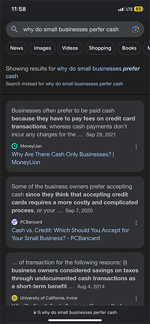
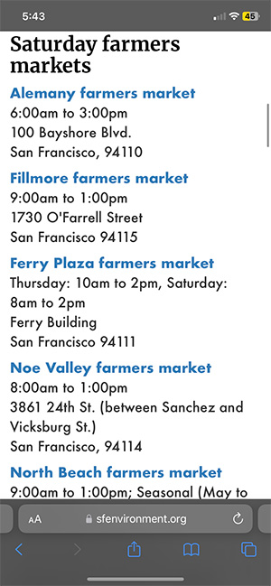
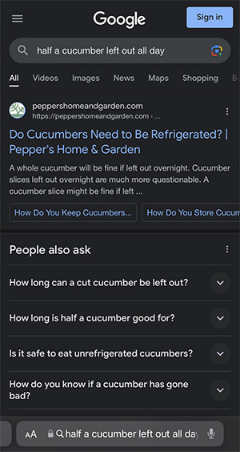

Looking for a place to get breakfast.

The cafe we chose was cash only and I wondered what the pros/cons of this are.
"My boyfriend wouldn't stop talking about getting a "scary neck tattoo" so I edited this for him.

Listening to music


Using the Nike Run app to track my running routes.
I have this page bookmarked because I can never remember the days of specific farmers markets.
Osees concert ticket. This was a good show.

My Apple watch told me the show was too loud.

Searching for a Le Cruset pan.

Checking my work schedule.

My Apple watch letting me know I was outbid ($6 was lowballing I knew it)

Looking for the location of a swimming hole using a photo's location.

Left half a cucumber out all day but didn't want to throw it away.
Listening to music